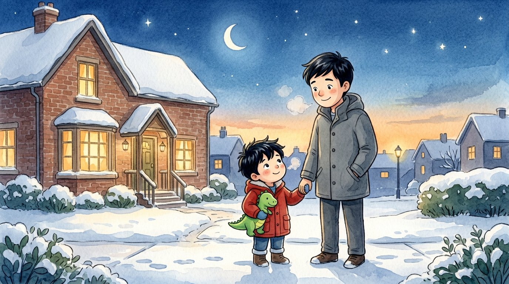

Primer grado · Ciencias · 1-ESS1-1 · 1-ESS1-2
¿Adónde se va el sol?
Un cuento sobre el sol, la luna y las estaciones.
Tres palabras nuevas
Cuando sale el sol por la mañana.
Cuando el sol se esconde por la tarde.
Una parte del año: primavera, verano, otoño o invierno.
Toca un dibujo para oír la palabra y qué significa.
El cuento
Un día de invierno, Adrián salió de la escuela y ya casi era de noche.
—¡Quiero jugar afuera! —dijo—. ¿Adónde se fue el sol?
Su papá le explicó: —Todos los días el sol sale por la mañana. Es el amanecer.
—Y todas las tardes se esconde. Es el atardecer.
En el cielo oscuro apareció la luna. Esa noche parecía una uña.
Cada noche, Adrián dibujó la luna en su cuaderno.
La luna fue creciendo hasta ser un círculo. ¡Luna llena!
Después se fue achicando otra vez. Siempre repite el mismo camino.
—En invierno hay menos horas de luz —dijo papá—. En verano hay más.
Cada estación tiene su patrón.
En verano, Adrián e Israel jugaron afuera hasta tarde.
El sol, la luna y las estrellas tienen patrones que se repiten.
Preguntas
Escucha la pregunta y toca el dibujo correcto.
-
Pregunta A. ¿Cuándo sale el sol?
Todos los días el sol sale por la mañana: es el amanecer.
-
Pregunta B. ¿Qué forma tenía la luna la primera noche?
Esa noche la luna era delgadita, como una uña.
-
Pregunta C. ¿En qué estación hay más horas de luz?
En verano hay más horas de luz que en invierno.